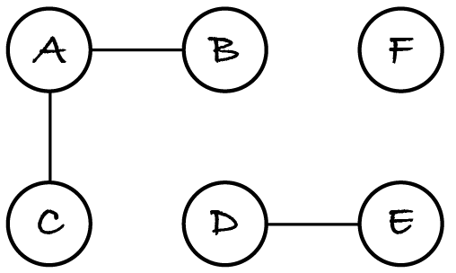

21.1. Undirected graph components
Sometimes we want to know if there’s a path between two given nodes, but the actual path, if it exists, is of little relevance. For example, if bad weather brings power cables down, we want to know for each residential or industrial area if it’s connected to a generator. We don’t need the path from the generator to the area: we only want to know whether it exists, to determine the cut-off areas.
The more general problem is to compute, for a given graph, its various separate subgraphs of mutually reachable nodes. The problem is slightly different for undirected and directed graphs, so let’s first look at the former. Consider the following undirected graph.
It has three subgraphs of connected nodes. One subgraph consists of nodes A, B, C and their edges, another of nodes D and E and their edge, and the third has node F by itself. Each of these subgraphs is called a connected component of the whole graph.
A component of an undirected graph is a largest possible connected subgraph. For example, edge A–B and its nodes aren’t a component: while they form a connected subgraph, it isn’t as large as possible because we can add node C and edge A–C to get a larger connected subgraph. There are no further edges for nodes A, B and C, so they (and their edges) form a component: there’s no larger connected subgraph they’re part of.
In other words, a connected component of an undirected graph is a largest set of nodes that are mutually reachable together with all their edges. For example, if the above graph had edge B–C, the component would be subgraph A–B–C–A: omitting any of the edges between those nodes would lead to a subgraph that isn’t the largest possible.
21.1.1. Problem definition and instances
The general problem we want to solve is: given an undirected graph and two nodes A and B, is there a path between them? Are they mutually reachable? In the power grid example, we want to know if electricity can flow from a generator A to a residential or industrial estate B and back.
Since components are subgraphs of mutually reachable nodes, to answer the question we compute the components and then check if A and B are in the same component. For example, in the graph above, A and E are in different components, so they’re not mutually reachable.
We need an ADT that associates each node with the component that it’s in: that’s the map ADT. The easiest way to label the components is to number them from 1 onwards. Here’s the precise problem definition.
component maps the nodes of graph to the integers from 1 to the number of connected components in graph
component(a) = component(b) if and only if nodes a and b are mutually reachable
To create some graphs for testing, I must first load the necessary code. Since breadth- and depth-first search use queues and stacks, it’s safest to always load the queue and stack implementations too, even if we end up not traversing graphs.
[1]:
%run -i ../m269_digraph
%run -i ../m269_ungraph
%run -i ../m269_queue
%run -i ../m269_stack
Let’s create the above graph to later test the computation of components.
[2]:
undirected = UndirectedGraph()
for node in "ABCDEF":
undirected.add_node(node)
undirected.add_edge("A", "B")
undirected.add_edge("A", "C")
undirected.add_edge("D", "E")
We also need to test with edge cases: a graph with the fewest possible components and a graph with the most components. Describe two such graphs and how many components they have.
A null graph (without edges) has the most components: one per node. A connected graph has the fewest components: only one.
We already have functions to generate null and connected graphs. We’ll use them later to create problem instances for testing.
21.1.2. Algorithm and complexity
The key idea to compute the components is that traversing an undirected graph from node A visits all nodes reachable from A, and therefore visits all nodes in the same component as A.
To compute all components, we repeatedly traverse the graph from each node that hasn’t been assigned to a component yet. Each traversal adds the nodes it visits to a new component. Here’s an outline of the algorithm:
Create an empty map. Initialise a component counter with 1. Go through each node in the graph. If the node is in the map, we already know its component, so do nothing. Otherwise, do any graph traversal from that node. Add all nodes returned by the traversal to the map, associated to the current component counter. Then increment the counter. After going through all nodes, return the map.
The complexity can be analysed as follows. Remember that n and e refer to the number of nodes and edges in a graph.
Checking if a node is in the map takes constant time if the map is implemented with a hash table. So checking all n nodes takes Θ(n).
The counter increments take Θ(1) in the best case and Θ(n) in the worst case, because that’s the least and most number of components, as seen earlier.
Each traversal only visits part of the graph, but together the traversals visit every node and edge once. They’re equivalent to a single traversal of the whole graph, which has complexity Θ(n + e) (Section 17.7.2).
Considering only the fastest-growing term, we can say that the complexity of the algorithm is Θ(n + e). This is both the best- and worst-case complexity, because the whole graph is traversed to find all components.
21.1.3. Code and tests
In translating the algorithm outline to Python we must remember that our traversal functions return the tree of all paths from the start node. We must add each tree node to the map.
Any traversal will work. The code below uses depth-first search (DFS). You can replace it with breadth-first search (BFS) and confirm you get the same components.
[3]:
# this code is also in m269_ungraph.py
def connected_components(graph: UndirectedGraph) -> dict:
"""Return the connected components of graph.
Postconditions: the output maps each node to its component,
numbered from 1 onwards.
"""
component = dict()
counter = 1
for node in graph.nodes():
if node not in component:
tree = dfs(graph, node)
for reached in tree.nodes():
component[reached] = counter
counter = counter + 1
return component
Let’s test the code with the example graph.
[4]:
connected_components(undirected)
[4]:
{'E': 1, 'D': 1, 'C': 2, 'B': 2, 'A': 2, 'F': 3}
As expected, it finds the three components: nodes A, B and C, nodes D and E, and node F by itself.
Let’s test with the edge cases. Remember that the graphs that m269_graphs.py generates have nodes 0, 1, 2, …, n – 1.
[5]:
%run -i ../m269_graphs
# most components: no node has neighbours
connected_components(null_graph(5))
[5]:
{0: 1, 1: 2, 2: 3, 3: 4, 4: 5}
[6]:
# fewest components: a connected graph; could be cycle graph or complete graph
connected_components(path_graph(5))
[6]:
{0: 1, 1: 1, 2: 1, 3: 1, 4: 1}
As expected, every node of the null graph is in a separate component and all nodes of a connected graph are in the same component.
Exercise 21.1.1
This exercise asks you to apply your knowledge of how connected components are computed to create a bespoke algorithm for a particular problem.
Consider again the power grid example. Implement the next function, which returns the set of nodes not connected to any power source node.
[7]:
def disconnected(graph: UndirectedGraph, sources: set) -> set:
"""Return all nodes not connected to any of the sources.
Preconditions: sources is a non-empty subset of the graph's nodes
"""
pass
disconnected(undirected, {"A"}) # you should obtain {'D', 'E', 'F'}
Exercise 21.1.2
The following is an exercise in modelling a situation. There’s no right or wrong answer.
A government agency wants to know which train stations are critical: that is, which stations would cause the most disruption if, due to accident or incident, they had to be closed and no trains could start, terminate or pass through those stations.
Given a connected undirected graph representing the train network, how would you define the critical nodes, based on the notion of components?